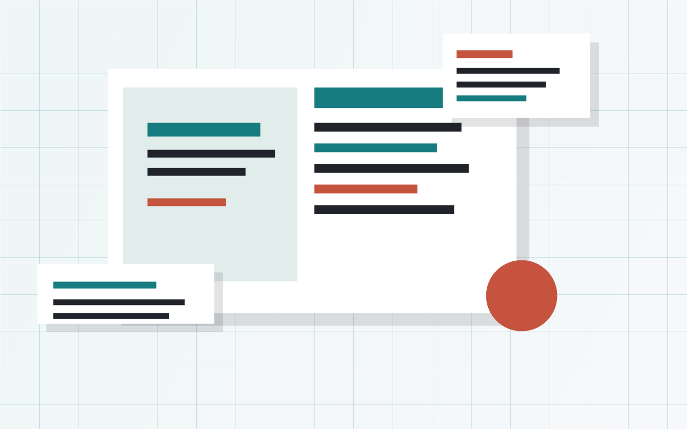

写作
沉淀项目经验、读书笔记和研究记录，优先保证内容可持续维护。

Now
沉淀项目经验、读书笔记和研究记录，优先保证内容可持续维护。
保留轻量静态结构，等内容稳定后再决定是否引入框架或自动生成流程。
把长期内容、临时实验和发布输出分开，减少后续迁移成本。
Writing
记录个人博客项目的第一步：先确定内容目录、页面链接和视觉基调。
Projects
Site
记录这个站点从内容目录、页面风格到发布流程的逐步搭建过程。
Content
后续可以按技术、阅读、项目复盘和研究记录拆分栏目。
About
偏好把项目过程、技术判断和长期笔记放在一个安静、可检索、能持续更新的地方。